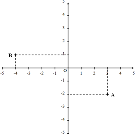

Nombres relatifs
Additions
Propriété :
Cas 1 : Pour ajouter deux nombres de même signe :
- on garde le signe commun
- on additionne les deux nombres sans leurs signes
Cas 2 : Pour ajouter deux nombres relatifs de signe contraire :
- on soustrait les deux nombres sans leurs signes
- on donne au résultat le signe du nombre dont la distance à zéro est la plus grande
Exemples :
(+3) + (+2) = +5 qui peut s'écrire 3 + 2 = 5
(−3) + (−2) = −5 qui peut s'écrire −3 − 2 = −5
(−3) + (+2) = −1 qui peut s'écrire −3 + 2 = −1
(+3) + (−2) = +1 qui peut s'écrire +3 − 2 = 1
Soustractions
Propriété : Pour soustraire deux nombres relatifs, on additionne l'opposé du deuxième nombre puis on applique les règles de l'addition.
Rappel : L'opposé d'un nombre relatif est le nombre qui a la même distance à zéro et le signe contraire comme par exemple +7 et −7.
Exemples :
(−4) − (−7) = (−4) + (+7) = +3
(−4) − (+7) = (−4) + (−7) = −11
Multiplications
Propriétés :
- Le produit de deux nombres relatifs de même signe est positif.
- Le produit de deux nombres relatifs de signes contraires est négatif.
Exemples :
| 3 × 5 = 15 |
3 × (−5) = −15 |
| −3 × (−5) = 15 |
−3 × 5 = −15 |
Propriété : Lorsqu'il y a plus de deux facteurs, on compte combien il y a de signe « − » et :
- si le nombre est pair, le résultat est positif
- s'il est impair, le résultat est négatif
Exemples :
−1 × (−1) × (−1) × (−1) × (−1) = −1 (Il y a 5 signes « − »)
−1 × (−1) × (−1) × (−1) × (−1) × (−1) = 1 (Il y a 6 signes « − »)
Divisions
Propriétés :
- Le quotient de deux nombres relatifs de même signe est positif.
- Le quotient de deux nombres relatifs de signe contraire est négatif.
Exemples :
| 30 ÷ 3 = 10 |
−30 ÷ 3 = −10 |
30 ÷ (−3) = −10 |
| −30 ÷ (−3) = 10 |
−(−30 ÷ (−3)) = −10 |
|
Priorités opératoires
Pour calculer le résultat d'une expression, il faut :
- commencer par les parenthèses (s'il y en a !), en commençant par les plus intérieures,
- puis les multiplications et les divisions de gauche à droite,
- et enfin les additions et les soustractions de gauche à droite.
Exemple :
A = (−2 + 5 × (−7)) + [(2 + 4 × (−3)) − (−10 − (−7) × (−2))]
A = (−2 − 35) + [(2 + 4 × (−3)) − (−10 − (−7) × (−2))]
A = −37 + [(2 + 4 × (−3)) − (−10 − (−7) × (−2))]
A = −37 + [(2 − 12) − (−10 − (−7) × (−2))]
A = −37 + [−10 − (−10 − (−7) × (−2))]
A = −37 + [−10 − (−10 − 14)]
A = −37 + [−10 − (−24)]
A = −37 + [−10 + 24]
A = −37 + 14
A = −23
Coordonnées d'un point
Définition : Dans un plan muni d'un repère, tout point est repéré par un couple de nombres relatifs (deux nombres) appelé coordonnées : la première est l'abscisse et la seconde l'ordonnée du point.
On note par exemple les coordonnées d'un point A (xA ; yA)
avec xA qui est l'abscisse du point A et yA est l'ordonnée du point A.
Exemple :

Ici, l'abscisse du point A est 3 et son ordonnée est −2. On a donc A(3 ; −2).
De même, B(−4 ; 1).